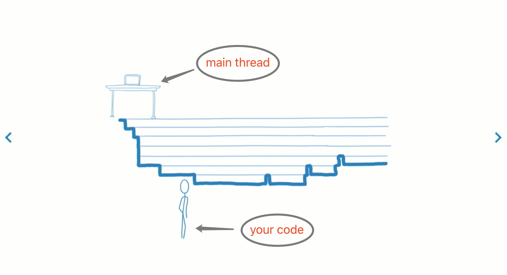
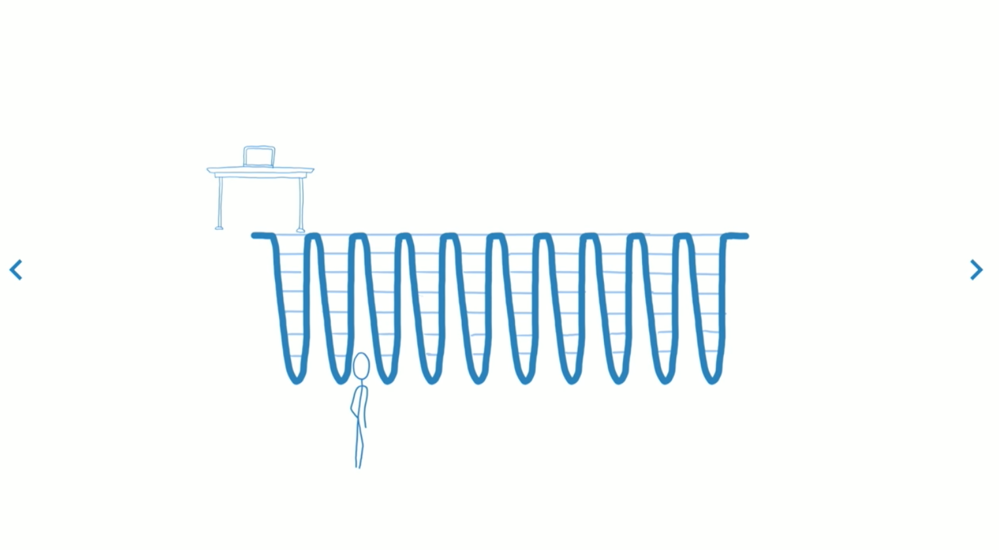
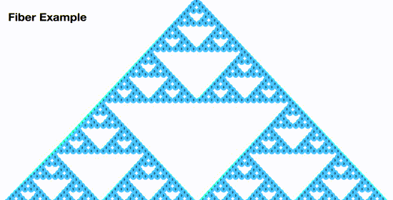
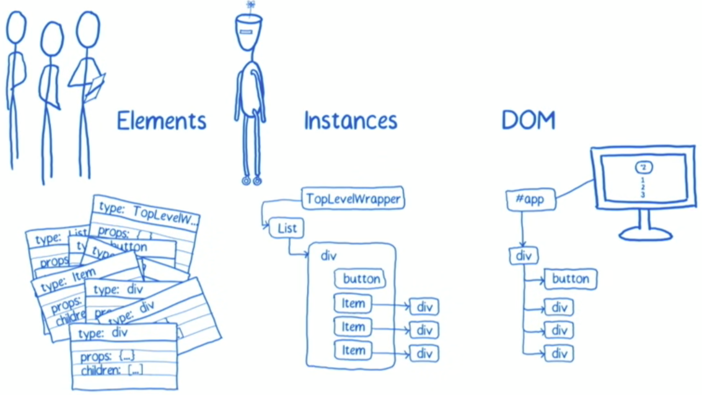

目录
- React Fiber是什么
- Fiber reconciler 和 Stack reconciler的区别
- React Fiber 数据结构
- 实现原理
- 举例
概念主要有 renderer、 stack reconciler、 fiber reconciler、 fiber…
reconciler
Reconciler就是我们所说的Virtul DOM，用于计算新老View的差异。react 16.x之前叫做 stack reconciler，之后是新的fiber reconciler。
renderer
renderer是和平台相关的代码，负责将View的变化渲染到不同的平台上，DOM、ReactNative、ReactART、WebGL等等平台都有自己的renderer
fiber
在react源码中有这样的一个注释
A Fiber is work on a Component that needs to be done or was done. There can be more than one per component.
一个Fiber就是一个对象，代表了一个组件上需要做的工作；一个React Instance可以对应一个或多个Fiber节点。
fiber之前
react在进行组件渲染时，从setState开始到渲染完成整个过程是同步的。
如果需要渲染的组件比较庞大，js执行会占据主线程时间较长，会导致页面响应度变差。
如下图所示：

横向代表一次state变动需要做的任务，纵向代表在该时刻，主线程的占用情况。可以看到，随着 React 同步任务的执行，主线程将会一直被占用.
react 官方有个动画示例能形象的描述 stack reconciler 所产生的问题

https://claudiopro.github.io/react-fiber-vs-stack-demo/
/Users/liuyan/Documents/learn/react/fixtures/fiber-triangle/index.html
fiber reconciler
核心目标
把可中断的工作拆分成小任务
对正在做的工作调整优先次序、重做、复用上次（做了一半的）成果
在父子任务之间从容切换（yield back and forth），以支持React执行过程中的布局刷新
支持render()返回多个元素
更好地支持error boundary
https://reactjs.org/docs/codebase-overview.html#fiber-reconciler
Fiber解决方案
把一个耗时长的任务分成很多小片，每一个小片的运行时间很短，虽然总时间依然很长，但是在每个小片执行完之后，都给其他任务一个执行的机会，这样唯一的线程就不会被独占，其他任务依然有运行的机会, 如下图

使用 Fiber过后，之前的卡顿问题就得到了解决，如下图：

Fiber的实现原理
既然使用常规的方法不能解决同步更新的问题，React Fiber 的做法是不使用 Javascript 的栈，而是将需要执行的操作放在自己实现的栈对象上。这样就能在内存中保留栈帧，以便更加灵活的控制调度过程，react可以手动操纵栈帧的调用。
任务拆分
stack reconciler
可以先回顾一下stack-reconciler下的react是怎么工作的。

react 创建（或更新）一些元素，react会根据这些元素创建（或更新）Virtual DOM，然后react根据更新前后virtual DOM的区别，去修改真正的DOM。在stack reconciler下，DOM的更新是同步的，也就是说，在virtual DOM的比对过程中，发现一个instance有更新，会立即执行DOM操作。
fiber reconciler
而在fiber-conciler下，操作是可以分成很多小部分(工作单元)，并且可以被中断的。
fiber reconciler
reconcile过程分为2个阶段（phase）：
- (可中断)render/reconciliation 通过构造workInProgress tree得出effect list （changes）
- (不可中断)commit effect list，更新对应的DOM
phase1 具体过程如下：
如果当前节点不需要更新，直接把子节点clone过来，跳到5；要更新的话打个tag
更新当前节点状态（props, state, context等）
调用shouldComponentUpdate()，false的话，跳到5
调用render()获得新的子节点，并为子节点创建fiber
如果没有产生child fiber，该工作单元结束，把effect list归并到return，并把当前节点的sibling作为下一个工作单元；否则把child作为下一个工作单元
如果没有剩余可用时间了，等到下一次主线程空闲时才开始下一个工作单元；否则，立即开始做
如果没有下一个工作单元了（回到了workInProgress tree的根节点），第1阶段结束，进入pendingCommit状态
requestIdleCallback
为了实现步骤6中的等待主线程有空闲时间的功能， React 使用了 requestIdleCallback这个 API
requestIdleCallback可以在这个空闲期（Idle Period）调用空闲期回调（Idle Callback），执行一些任务.
通常，客户端线程执行任务时会以帧的形式划分，大部分设备控制在30-60帧是不会影响用户体验；在两个执行帧之间，主线程通常会有一小段空闲时间

phase2（commit） 主要工作
- 处理effect list
主要包括3种处理：更新DOM树、调用组件生命周期函数以及更新ref等内部状态 - 交换 current tree 与 workInProgress tree。
优先级
在reconciliation 阶段，Fiber 对当前处理的任务有优先级之分，主要策略是：低优先级的操作可以被高优先级的操作打断，并让主线程执行高优先级的更新。
带来的问题：节点对应的生命周期可能会被多次调用。
生命周期

fiber 数据结构
对于每个节点来说，Fiber 节点不光存储了对应元素的基本信息，还要保存一些用于任务调度的信息，一个Fiber 主要有以下字段
1 |
|
source code：Root/packages/react-reconciler/ReactFiber.js#68
实际运行的 FiberNode instance 如下图所示:

所以说，在React 中，fiber 仅仅是个对象，表示 reconciliation 阶段所能拆分的最小工作单元，它其实和 react instance 一一 对应，通过stateNode属性管理Instance自身的特性。通过child和sibling表征当前工作单元的下一个工作单元，return表示处理完成后返回结果所要合并的目标，通常指向父节点。整个结构是一个链表树。每个工作单元（fiber）执行完成后，都会查看是否还继续拥有主线程时间片，如果有继续下一个，如果没有则先处理其他高优先级事务，等主线程空闲下来继续执行。
举个🌰
该示例来自Lin Clark的youtube 分享。
https://www.youtube.com/watch?v=ZCuYPiUIONs
页面包含一个列表，通过该列表渲染出一个button和一组Item，Item中包含一个div，其中的内容为数字，对应列表[1,2,3]。通过点击button，可以使列表中的所有数字进行平方。另外有一个按钮，点击可以调节字体大小。

初始化生成 fiber-tree, 类似于 之前的virtual dom tree

react还会维护一个workInProgressTree。workInProgressTree用于计算更新，完成reconciliation过程。(double buffering pooling technique, 中文翻译：叫双缓冲池技术，源码在：ReactFiber.js#244)

setState后， 调用this.updater.enqueueSetState, 将更新放入 List 组件的 update queue中,然后调用 scheduleWork(fiber, expirationTime), 让 scheduler 去处理更新。scheduler会根据当前主线程的使用情况来处理这次update。

如果此时有时间可以处理，那么就会进入workLoop 循环。
1 | function workLoop(isAsync) { |
work loop机制可以让react在计算状态和等待状态之间进行切换。workLoop需要知道两个变量：
- 下一个工作单元（下一个待处理的fiber）;
- 当前还能占用主线程的时间。
对于第一个loop来说，下一个待处理单元为根节点（此例中为 HostRoot）
因为根节点上的更新队列为null，所以直接从fiber-tree上将根节点复制到workInProgressTree中去。根节点中包含指向子节点（List）的指针 child。
根节点没有什么更新操作，根据其child指针，接下来把List节点及其对应的update queue也复制到workinprogress中。List插入后，向其父节点返回，标志根节点的处理完成

根节点处理完成后，react此时检查时间片是否用完。如果没有用完，根据其保存的下个工作单元的信息开始处理下一个节点List。（此时又潜出水面看一看）
接下来处理List 的workLoop。因为List中有更新，react会更新List的state值，然后调用instance.render()，然后得到一组通过更新后的List值生成的elements, react会根据生成elements的类型，来决定fiber是否可重用。对于当前情况来说，新生成的elments类型并没有变（依然是Button和Item），所以react会直接从fiber-tree中复制这些elements对应的fiber到workInProgress 中。并给List打上标签，因为这是一个需要更新的节点.

如果还有时间，接下来处理button，
button没有任何子节点，所以此时可以返回，并标志button处理完成。
然后开始处理第一个 Item。
对于第一个Item而言，更改前后都是1,所以不会改变，复制div，处理完成。
检查时间，处理第二个Item， 第二个Item 有更新，打标记，调用 item 的 render，将2 更改为4， 因为div有更新，所以给div打个 更新标记。

如果已经处理到 div 节点，div已经是叶子节点，且没有任何兄弟节点，且其值已经更新，这时候，需要将此节点改变产生的effect合并到父节点中。此时react会维护一个列表，其中记录所有产生effect的元素。（effect其实就是对真实DOM的改动）
当处理完整个fiber tree 过后，此时react将workInProgress标记为pendingCommit，意味着可以进入commit 阶段了。

进入阶段2过后，react会根据reconciliation阶段计算出来的effect-list来更新DOM。
更新完DOM之后，workInProgress就完全和DOM保持一致了，为了让当前的fiber-tree和DOM保持一直，react交换了current和workinProgress两个指针。